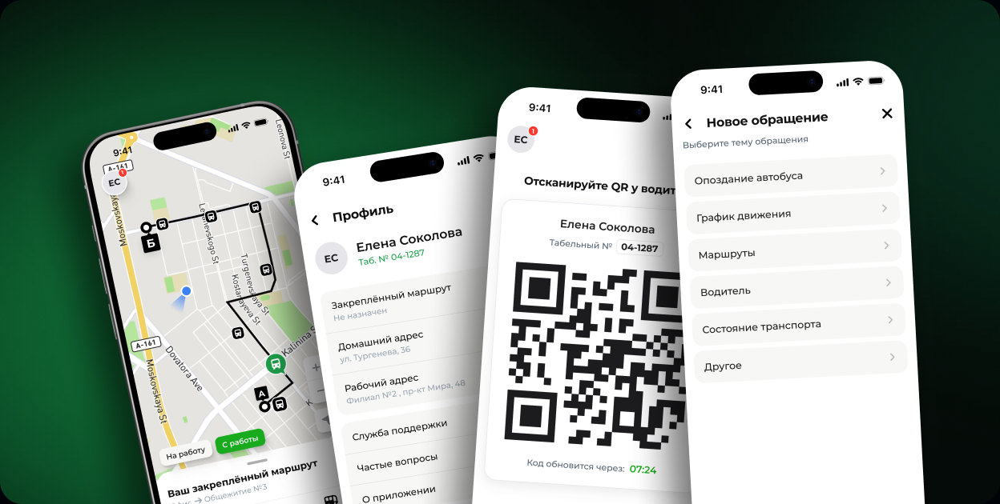
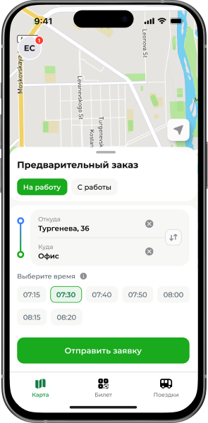
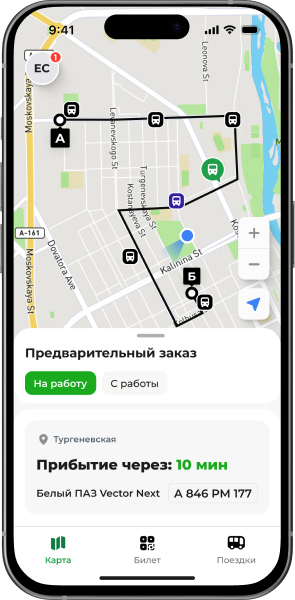
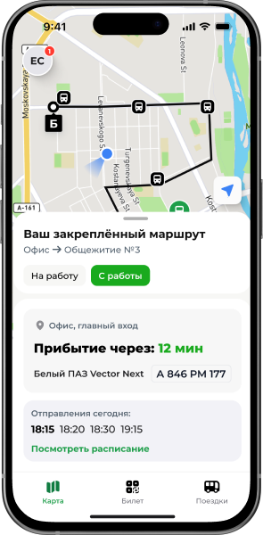
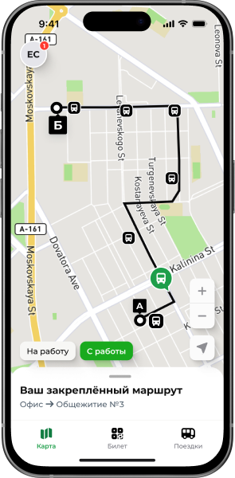
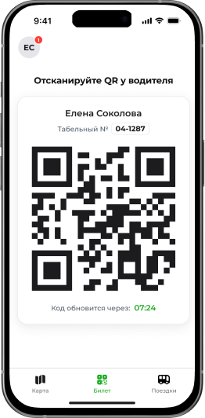
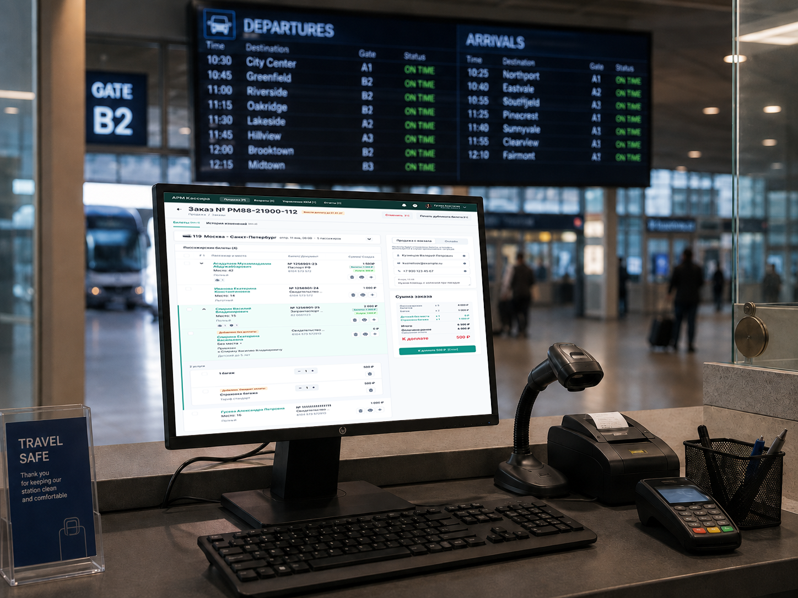

Постоянный и сменный
Стабильный график или повторяющиеся смены.
Как объединить регулярные и нерегулярные поездки сотрудников в одном продукте
Экраны показаны с вымышленными данными

Контекст
Корпоративным транспортом пользуются сотрудники с разными графиками. Один и тот же человек может использовать сервис по-разному в зависимости от периода работы.
Стабильный график или повторяющиеся смены.
Расписание меняется, отдельные поездки планируются вручную.
Продуктовая задача
Ключевая задача — разделить сценарии по правилам доступа и сохранить общую логику интерфейса.
На старте проекта я собрала и структурировала требования заказчика: сервис должен был поддерживать предзаказ и закреплённый маршрут для сотрудников с разными графиками.
Механика закрепления уже была частью ТЗ. Моя задача состояла в том, чтобы перевести бизнес-требования в понятные взаимоисключающие сценарии и сохранить между ними общую логику интерфейса. Сотрудник с закреплённым маршрутом не может оформить предзаказ самостоятельно.
Мой вклад — логика двух взаимоисключающих сценариев, иерархия экрана закреплённого маршрута и структура сбора обращений: данные вместо свободного текста.
Для сотрудников без закреплённого маршрута, которым нужно самостоятельно выбирать направление и время поездки.
Для сотрудников с назначенным маршрутом. Предзаказ в этом режиме недоступен.
01 · Предзаказ
Если график сотрудника меняется, система не может заранее определить нужный маршрут. Пользователь сам выбирает направление, дату, время и доступную точку посадки.

Сценарий построен как последовательный выбор только необходимых параметров.
Пользователь сохраняет контроль, но не сталкивается с лишними шагами.
02 · Закреплённый маршрут
Закреплённый маршрут назначается сотруднику заранее, поэтому предзаказ в этом режиме недоступен. Я сохранила общую логику интерфейса: карту, карточку ближайшей поездки, остановку, статус автобуса и QR. Пользователь сразу видит назначенный маршрут и ближайший рейс.


03 · Карта как инструмент
«Где мой автобус и успею ли я к остановке?»

На карте показаны:
Интерфейс не показывает все автобусы сразу и не перегружает пользователя.
04 · QR и посадка
Билет вынесен в отдельный раздел приложения, поэтому его легко открыть перед посадкой. На экране сотрудник видит свои данные и QR-код, который показывает водителю для сканирования.
QR-код привязан к учётной записи и автоматически обновляется. Пересланный скриншот к моменту посадки становится недействительным.
Билет всегда под рукой — бумажный пропуск не нужен.
Контроль доступа и автоматический учёт поездок.

Бизнес-логика
Предзаказы показывают востребованные направления, дни, время и стабильность спроса. При появлении регулярного паттерна сотрудников можно переводить на постоянный маршрут. После перевода предзаказ для них недоступен.
Предзаказы → данные о спросе → решение о закреплении маршрута → меньше ручных действий
Меньше повторяющихся действий.
Более предсказуемая загрузка транспорта.
Показать новое время рейса и обновить карточку поездки.

Показать время следующего рейса и переход к расписанию.


